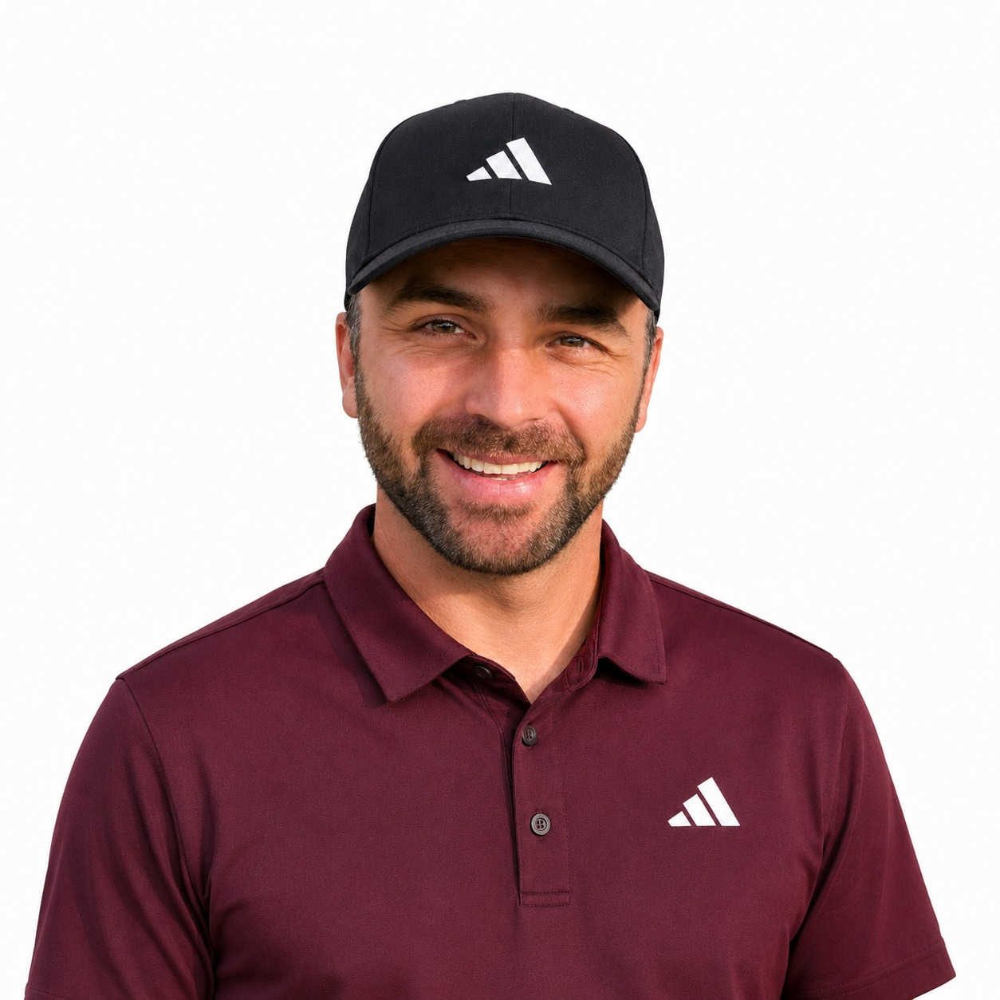
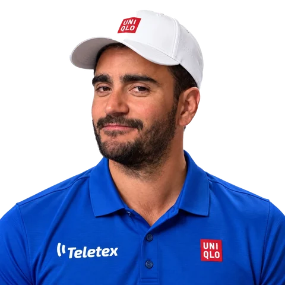

HOYO 15PAR 4
RORROE
📺 LG
TEE
GOLPES0PAR 4
SE VIENE
FURIA
0:00.000
0KM/H
MODO PRO
$ npm run cancha · Rorro
compilando la cancha en 3D

Si jugaste con él, Rorro te anotó la tarjeta… y Rorro se equivoca.
50 y 50: un golpe menos o uno más.

MEJOR PELOTA¿Con cuál te quedás?¡DESBLOQUEADO!
Hiciste −1 con Fito, Miguelón y el Ninja. Bombas desde el tee, approach perfectos… y los controles al revés.
📞 DICKYLLAMADA · UNA POR VUELTA
El que atiende te pega el próximo tiro, con su handicap y su habilidad. Se ayudan entre Dickys.

SDGA ⛳
Mientras Gonza cierra con Nintendo los derechos del Mario Golf, jugá los tres hoyos que más tarjetas rompieron en San Diego.
Jugás como
Con la misma cuenta de la SDGApp: si sos del club, entrás con tu jugador.
Elegí tu nivel de dificultad
1 de 24 · ↔ pasar · de más fácil a más difícil
Del más fácil al más difícil (medido jugando 60 vueltas con cada uno). Cada uno con su habilidad.
¡HOYO EN UNO!
+10
bananas para vos
| Hoyo | Par | Golpes |
|---|
⏱ Tiempo—
Tenés 10 segundos. Si no firmás, el Marshall te pone 110.
La decisión es inapelable. Y no, el Marshall no está comprado.
— 🇸🇪 El Marshall
🧪 MATCH DE PRUEBA · rivales y bananas de mentira, en este teléfono. Los rivales contestan solos al ratito.
Jugás tu vuelta una sola vez y le llega el desafío. Cuando juegue, ve tu pelota en vivo, como un fantasma.
Tocá la cancha para verla sin controles
Por player